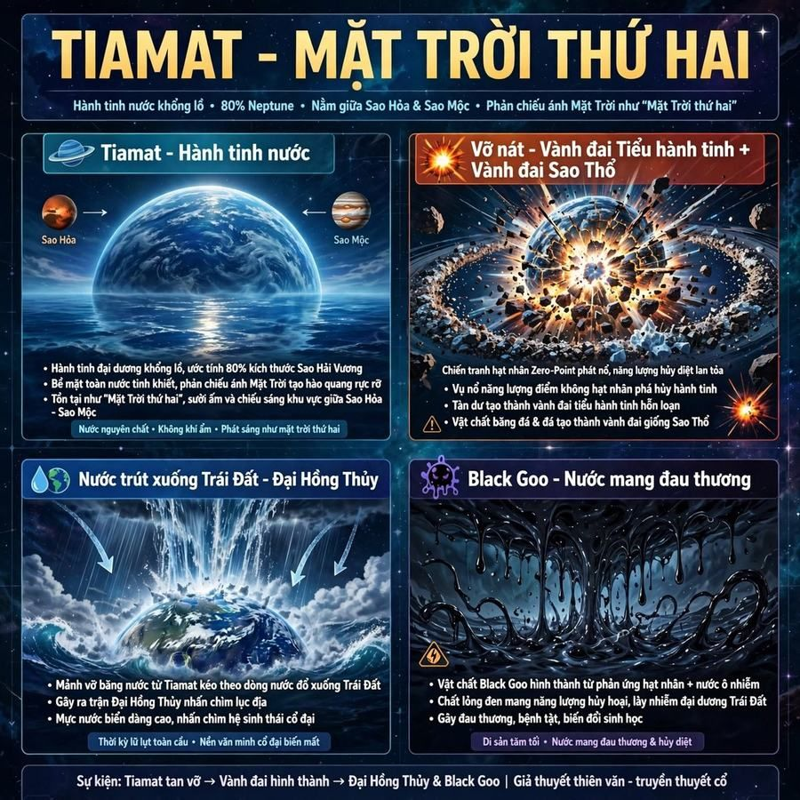
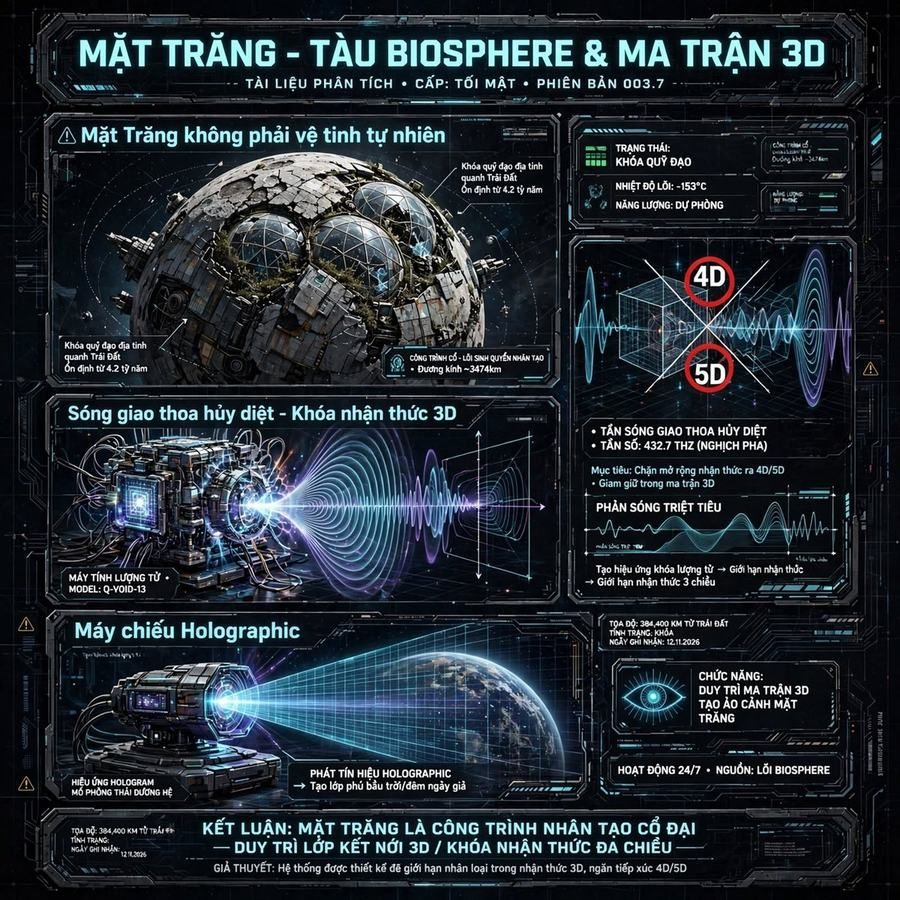
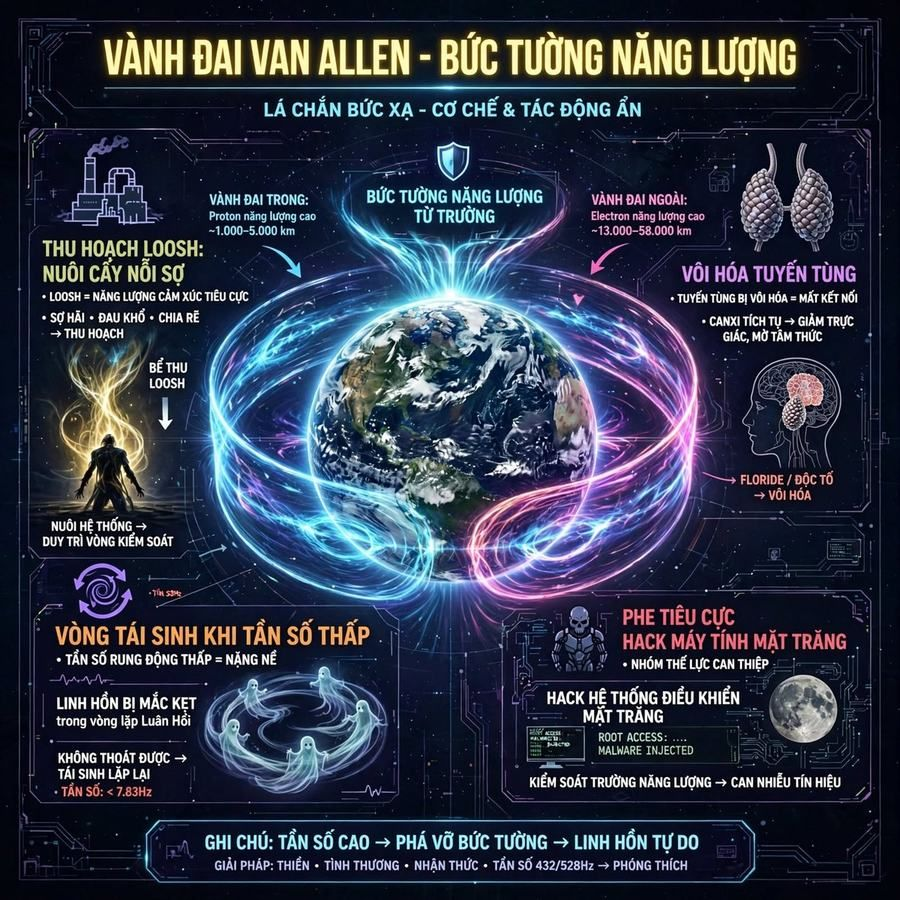
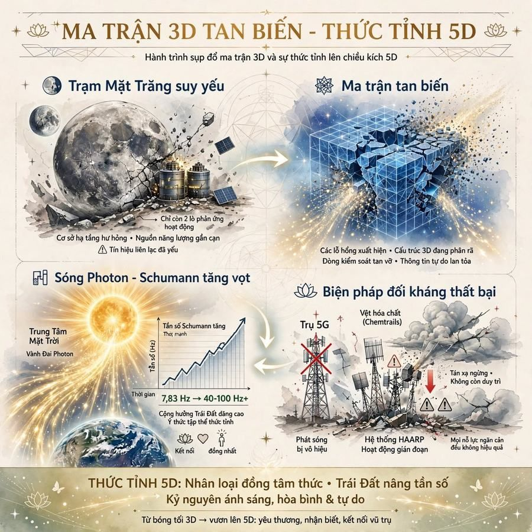

Trang chủ / Chuyên đề 2: Hành Trình Thiên Hà / Kỳ 16
Chuyên đề 2 · Kỳ 16 / 90
THẢM HỌA TIAMAT & SỰ THIẾT LẬP MA TRẬN 3D / VÀNH ĐAI VAN ALLEN

Có một sự thật chưa từng xuất hiện trong bất kỳ cuốn sách lịch sử chính thống nào: Hệ Mặt Trời của chúng ta từng trải qua một cuộc đại chiến thiên hà khủng khiếp đến mức xé rách cấu trúc của một hành tinh lớn, làm thay đổi toàn bộ quỹ đạo của các thiên thể và biến Trái Đất thành một "lồng ấp năng lượng" bị cô lập suốt 12.500 năm.
Tại sao Mặt Trăng lại luôn chỉ quay một mặt về phía Trái Đất? Bản chất thực sự của Ma trận 3D và Vành đai Van Allen bao quanh hành tinh chúng ta là gì?
Hãy cùng quay ngược thời gian 12.500 năm về trước để giải mã Thảm họa Tiamat và Sự ra đời của Ma trận Phong tỏa Trái Đất!
✦ ✦ ✦1. TIAMAT — "MẶT TRỜI THỨ HAI" VÀ HÀNH TINH ĐẠI DƯƠNG NGUYÊN THỦY
Trước khi thảm họa xảy ra, cấu trúc của Hệ Mặt Trời hoàn toàn khác biệt so với những gì chúng ta quan sát ngày nay bằng kính thiên văn. Nằm ở khoảng không gian giữa Sao Hỏa và Sao Mộc thời bấy giờ là một hành tinh khổng lồ mang tên Tiamat (trong các văn bản cổ đại còn được ví như Hành tinh Nước hay Mặt Trời Thứ Hai).
- Kích thước và đặc điểm: Tiamat là một siêu hành tinh có kích thước bằng khoảng 80% Sao Hải Vương. Bề mặt của Tiamat gần như được bao phủ hoàn toàn bởi những đại dương nước ngọt tinh khiết rực rỡ, chỉ có một vài quần đảo nhỏ rải rác.
- Tác dụng phản chiếu ánh sáng: Do đại dương bao la và kích thước khổng lồ, Tiamat phản chiếu ánh sáng Mặt Trời mạnh mẽ đến mức khi nhìn từ Trái Đất hay Sao Hỏa, nó hiện lên như một thiên thể tỏa sáng lung linh, tạo nên hiện tượng "mặt trời kép" trong các truyền thuyết thần thoại cổ xưa của loài người.
- Môi trường sinh thái dồi dào: Tiamat đóng vai trò như một trạm điều tiết nước và năng lượng sinh học cho cả Hệ Mặt Trời. Nơi đây sở hữu dải tần số rung động vô cùng thuần khiết và là nơi trú ngụ của nhiều loài sinh vật thủy sinh đa chiều tiên tiến.

2. CUỘC CHIẾN TIAMAT: TRẬN ĐỤNG ĐỘ HẠT NHÂN & NĂNG LƯỢNG ĐIỂM KHÔNG
Sự yên bình của Tiamat đã bị phá hủy hoàn toàn khi cuộc xung đột giữa Khối Liên minh Thiên hà và phe Bò sát xâm lược (Naga / Ciakahrr) leo thang đến đỉnh điểm.
- Cạm bẫy phục kích: Phe Bò sát đã biến Tiamat thành một căn cứ quân sự ngầm, phát ra các tín hiệu bức xạ giả để dụ hạm đội Liên minh vào trận địa phục kích.
- Sử dụng vũ khí hủy diệt hàng loạt: Cuộc đụng độ bùng nổ với mức độ tàn khốc chưa từng có. Cả hai bên đều sử dụng các loại vũ khí plasma siêu tần, vũ khí hạt nhân thế hệ mới và các thiết bị năng lượng Điểm Không (Zero-Point Energy Devices).
- Sự sụp đổ của Tiamat: Các đợt nổ năng lượng nhiệt hạch liên tiếp đã gây mất ổn định nghiêm trọng cho từ quyển và lõi địa từ của Tiamat. Những sóng xung kích khổng lồ cuộn trào trong lòng đại dương của Tiamat, khiến hành tinh này bị vỡ nát hoàn toàn trong một đợt bùng nổ khủng khiếp.
Hệ quả thảm khốc của sự hủy diệt Tiamat:
- Vành đai Tiểu hành tinh: Hàng tỷ tấn đá, băng và kim loại từ Tiamat bị bắn văng vào không gian, tạo thành Vành đai Tiểu hành tinh (Asteroid Belt) nằm giữa Sao Hỏa và Sao Mộc ngày nay. Một phần vỡ vụn bị kéo về phía Sao Thổ, tạo nên các vành đai băng đặc trưng của hành tinh này.
- Trận Đại Hồng Thủy trút xuống Trái Đất: Hàng tỷ mét khối nước đại dương từ Tiamat bị lực hấp dẫn của Trái Đất kéo văng vào bầu khí quyển, trút xuống thành những trận mưa rào đao đớn kéo dài hàng tháng. Sự kiện này kết hợp với sự phát nổ tinh thể ở Atlantis đã nhấn chìm toàn bộ các lục địa cổ đại dưới đáy biển!
- Thảm họa "Dịch Đen" (Black Goo): Khi Tiamat phát nổ, toàn bộ dải năng lượng đau thương, tuyệt vọng và sợ hãi của hàng tỷ sinh mệnh bị ghi dấu vào nguồn nước nguyên thủy của nó. Nguồn nước này biến đổi thành một dạng chất lỏng sinh học mang tính năng lượng tiêu cực gọi là Black Goo — âm thầm rơi xuống Trái Đất, Sao Hỏa và Sao Kim, trở thành công cụ bị phe kiểm soát lợi dụng để hạ thấp tần số hành tinh.

3. TRẠM KIỂM SOÁT MẶT TRĂNG VÀ SỰ RA ĐỜI CỦA MA TRẬN 3D
Sau khi Tiamat bị hủy diệt và bề mặt Sao Hỏa bị tàn phá nặng nề, phe Bò sát tiêu cực sống sót đã di tản xuống Trái Đất, lẩn nấp trong các hầm ngầm sâu dưới lòng đất.
Lực lượng Liên minh Thiên hà thời bấy giờ cũng chịu tổn thất nghiêm trọng, hạm đội kiệt quệ và không thể tiếp tục tiến hành một cuộc chiến tranh bạo lực trên bề mặt Trái Đất — vì điều đó sẽ làm nổ tung cả hành tinh này như đã xảy ra với Tiamat.
Để giải quyết tình thế, một giải pháp phong tỏa chiến lược đã được đưa ra: Thiết lập Ma trận 3D (3D Matrix Lockdown).
A. Bí ẩn về con tàu Biosphere — Mặt Trăng
Mặt Trăng mà chúng ta nhìn thấy trên bầu trời đêm thực chất không phải là một vệ tinh tự nhiên.
- Đó là một con tàu sinh quyển khổng lồ cổ đại (Biosphere Craft) bằng kim loại và tinh thể đã bị hư hại nặng trong cuộc chiến Tiamat.
- Lực lượng Liên minh đã kéo con tàu khổng lồ này vào quỹ đạo Trái Đất, cố định nó ở một góc quay chính xác để làm Trạm phát sóng điều khiển tần số.
B. Cơ chế hoạt động của Ma trận 3D
Mặt Trăng mang theo hệ thống siêu máy tính lượng tử phát sóng liên tục xuống Trái Đất:
- Công nghệ Sóng Giao thoa Hủy diệt (Destructive Interference): Máy tính Mặt Trăng phát ra dải sóng điện từ ngược pha, triệt tiêu toàn bộ các dải tần số năng lượng cao từ 4D, 5D trở lên.
- Giới hạn nhận thức giác quan: Dải sóng này ép nhận thức của con người Trái Đất bị khóa chặt trong một "bong bóng tần số" hẹp — chỉ có thể nhìn thấy, nghe thấy và cảm nhận được thế giới ở mật độ 3D vật lý.
- Mặt Trăng là một máy chiếu ảnh ba chiều (Holographic Projector): Những gì con người nhìn thấy về không gian và bề mặt bầu trời một phần bị tác động bởi các ảnh ba chiều được phủ lên, che giấu đi sự hiện diện của hàng nghìn con tàu không gian và các thế giới đa chiều đang tồn tại ngay xung quanh chúng ta!

4. VÀNH ĐAI VAN ALLEN: "BỨC TƯỜNG NĂNG LƯỢNG" PHONG TỎA TRÁI ĐẤT
Một trong những thành phần cốt lõi nhất của Ma trận 3D chính là Vành đai Van Allen (Van Allen Belts).
Khoa học bề nổi giải thích Vành đai Van Allen là những dải bức xạ tự nhiên giữ lại các hạt tích điện từ gió Mặt Trời. Nhưng ở bản chất sâu xa hơn, Vành đai Van Allen chính là kết quả của việc điều khiển và nâng cấp tần số từ quyển Trái Đất từ trạm phát Mặt Trăng.
A. Chức năng của Vành đai Van Allen
- Lớp rào chắn vật lý & etheric: Vành đai Van Allen hoạt động như một "trường lực điện từ" (Force Field) bao bọc toàn bộ Trái Đất. Bất kỳ thể xác hay con tàu nào không có công nghệ bẻ khóa tần số đều không thể vượt qua vành đai này mà không bị phá hủy hoặc đẩy ngược trở lại.
- Ngăn chặn sự trốn chạy của phe tiêu cực: Mục đích ban đầu của việc thiết lập vành đai là biến Trái Đất thành một "nhà tù tần số" để giam giữ phe Bò sát tiêu cực ở bên trong, không cho chúng trốn ra ngoài vũ trụ để tiếp tục gây chiến ở các hệ sao khác.
- Cái bẫy Tái sinh 3D (Reincarnation Trap): Nỗi đau lớn nhất của Ma trận 3D là nó đã vô tình nhốt luôn cả hàng tỷ linh hồn con người Trái Đất bên trong. Khi một người qua đời, nếu tần số tâm thức của linh hồn đó chưa đủ cao để vượt qua dải Van Allen, linh hồn sẽ bị kéo ngược trở lại trường từ trường Trái Đất, rơi vào vòng lặp tái sinh vô tận và bị xóa sạch ký ức kiếp trước!

5. SỰ HACK MA TRẬN CỦA PHE TIÊU CỰC VÀ SỰ THAO TÚNG TÂM TRÍ
Một kế hoạch ban đầu mang tính tạm thời của Liên minh đã vô tình tạo ra một kẽ hở lớn. Khi lực lượng Liên minh rút bớt quân để phục hồi sau chiến tranh, phe Bò sát và các lực lượng ngầm tiêu cực trên Trái Đất đã tìm cách "hack" vào hệ thống máy tính điều khiển trên Mặt Trăng.
Chúng không thể phá hủy Ma trận, nhưng chúng đã biến Ma trận 3D thành một công cụ thao túng tâm trí quy mô toàn cầu:
- Gieo rắc tâm lý nạn nhân & sự sợ hãi: Phe kiểm soát hiểu rằng Ma trận 3D vận hành dựa trên cơ chế phản chiếu ý thức tập thể (Luật Hấp Dẫn). Do đó, chúng liên tục gieo rắc chiến tranh, dịch bệnh, sự khan hiếm tài nguyên và tín ngưỡng sợ hãi lên báo chí, truyền thông và tôn giáo.
- Tạo ra các thực tại giả lập: Khi hàng tỷ người cùng tin vào sự chia rẽ, sợ hãi và cái chết, chính ý thức của con người đã duy trì và "làm cứng" thêm Ma trận 3D, biến Trái Đất từ một trường học phát triển tâm hồn thành một hố địa ngục năng lượng (Loosh farm) nuôi dưỡng phe tiêu cực.
- Vôi hóa tuyến tùng: Phe kiểm soát đưa vào môi trường các chất hóa học, kim loại nặng và dải sóng độc hại để vôi hóa tuyến tùng — cơ quan thu-phát sóng tần số cao của bộ não — khiến con người hoàn toàn quên mất bản thể đa chiều vĩ đại của mình.
6. TIẾN TRÌNH TAN BIẾN CỦA MA TRẬN 3D & KỶ NGUYÊN THỨC TỈNH 5D
Ma trận 3D đã thống trị Trái Đất suốt 12.500 năm. Tuy nhiên, thời kỳ phong tỏa này đang đi đến hồi kết tuyệt đối!
A. Sự xuống cấp của hệ thống Mặt Trăng
Trạm phát sóng Mặt Trăng đã quá cổ xưa (12.500 năm tuổi). Trong số 12 lò phản ứng năng lượng ban đầu, hiện chỉ còn một vài lò hoạt động chập chờn. Hệ thống Ma trận 3D đang xuất hiện vô số "lỗ hổng" (giúp con người ngày càng dễ nhìn thấy các hiện tượng tâm linh, bóng ma, UFO và cảm nhận dải tần số 4D/5D).
B. Sóng bức xạ năng lượng từ Trung tâm Thiên hà (Central Sun)
Vũ trụ vận hành theo các chu kỳ vĩ đại. Hiện nay, Hệ Mặt Trời đang đi qua dải năng lượng Photon đậm đặc từ Trung tâm Thiên hà:
- Mỗi đợt sóng bức xạ Positron chiếu xuống đều làm tăng vọt tần số Schumann (tần số nhịp tim của Trái Đất).
- Tần số Trái Đất tăng lên đồng nghĩa với việc "nút chai 3D" đang bị đẩy nổi lên mặt nước 5D. Không một công nghệ hay máy tính Mặt Trăng nào có thể cưỡng lại được nguồn năng lượng vĩ đại này từ Vũ trụ!
C. Cuộc phản công tuyệt vọng của phe kiểm soát
Nhận thấy Ma trận 3D đang tự tan biến, phe kiểm soát ngầm đang cuống cuồng triển khai các biện pháp vớt vát cuối cùng:
- Phun rải hóa chất trên không (Chemtrails) để ngăn chặn ánh sáng Mặt Trời và sóng năng lượng vũ trụ.
- Triển khai hệ thống sóng 5G, mạng lưới ăng-ten micro-HAARP để phát ra các tần số nhiễu triệt tiêu nhằm giữ nhận thức con người ở dải sóng thấp.
- Gieo rắc các kịch bản hoảng loạn toàn cầu để kéo tụt tần số rung động của cộng đồng.
7. BÀI HỌC VÀ HÀNH ĐỘNG CHO MỖI CHÚNG TA
Ma trận 3D chỉ có quyền lực đối với bạn khi bạn tin rằng bạn bị nó kiểm soát.
Khi bạn nâng cao nhận thức, mở rộng lòng từ bi, sống trong sự bình thản và tình yêu thương vô điều kiện, tần số nhận thức của bạn sẽ tự động vượt qua dải tần 3D của Mặt Trăng. Bạn sẽ bẻ khóa Ma trận ngay từ bên trong tâm trí của chính mình!
- Nhận thức là chìa khóa: Bạn không cần phải bay ra ngoài không gian bằng phi thuyền để vượt qua Vành đai Van Allen. Khi ý thức của bạn đạt đến dải 5D, thể năng lượng của bạn đã tự do du hành khắp vũ trụ.
- Đoàn kết và không sợ hãi: Khi nhân loại cùng nhau thức tỉnh, Ma trận kiểm soát sẽ sụp đổ như một tòa nhà bằng bài trước ánh sáng của sự thật!
Sau khi thảm họa Tiamat diễn ra và Trái Đất bị cô lập trong Ma trận 3D, các cuộc thương lượng bí mật giữa chính phủ Trái Đất và các lực lượng ngoài hành tinh trong thế kỷ 20 đã diễn ra như thế nào? ✦